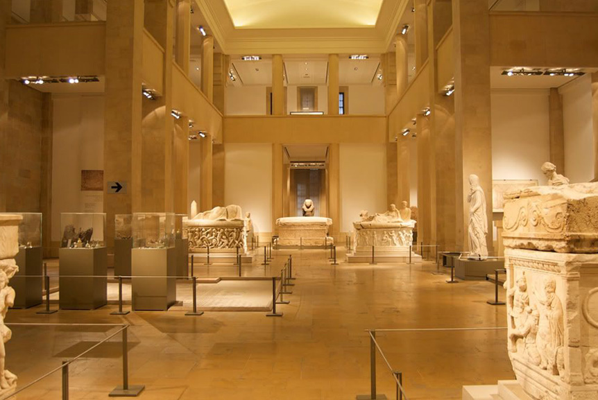

Museums of Lebanon: Windows to the Past Lebanon’s museums offer a fascinating glimpse into its ancient civilizations, modern art, and diverse heritage. Discover artifacts, artworks, and exhibitions that tell Lebanon’s story.

Top Museums to Visit in Lebanon
Museum of Lebanese Prehistory
Discover Lebanon's ancient roots with artifacts from the prehistoric era, showcasing early human life in the region.
FIND OUT MORERobert Mouawad Private Museum
A luxurious museum showcasing art, jewelry, and rare artifacts, including Byzantine mosaics and antique weaponry.
FIND OUT MORESoap Museum
Located in Sidon, this unique museum explores Lebanon's soap-making heritage and the ancient art of soap production.
FIND OUT MOREAudi Mosaic Museum
A museum with an impressive collection of Byzantine mosaics and artifacts, offering insights into ancient decorative arts.
FIND OUT MOREMemory of Time Museum
This museum in Byblos explores Lebanon's ancient fossils, highlighting the country's geological history and marine fossils.
FIND OUT MORE